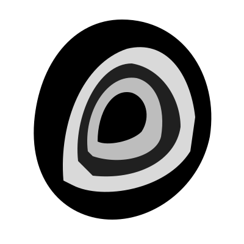

Canonical mark variants
Color · light
on Midnight-1
#f8f9fb
#f8f9fb
Color · dark
on Midnight-9
#1d3352
#1d3352

Mono · black
true mono · single tone
Mono · white
true mono · single tone
Min size · specimen
Below 16 px the inner rings collapse — use a wordmark or favicon instead.
16 px · min
24 px
32 px
48 px
64 px
Clear space · ½ mark height
Reserve clear space equal to half the mark's height on every side.
x/2
x/2
x/2
x/2
Circular clip · favicon test
The mark already reads as round, but verify cropping behavior at avatar / favicon sizes.
40 · light
40 · dark
32 · mono
24 · favicon
Transparent · no chip
Silhouette on body color — header bars, document margins, slide corners.
Min size 16 px · clear space ½ mark height · monos are single-tone (no orange dot)